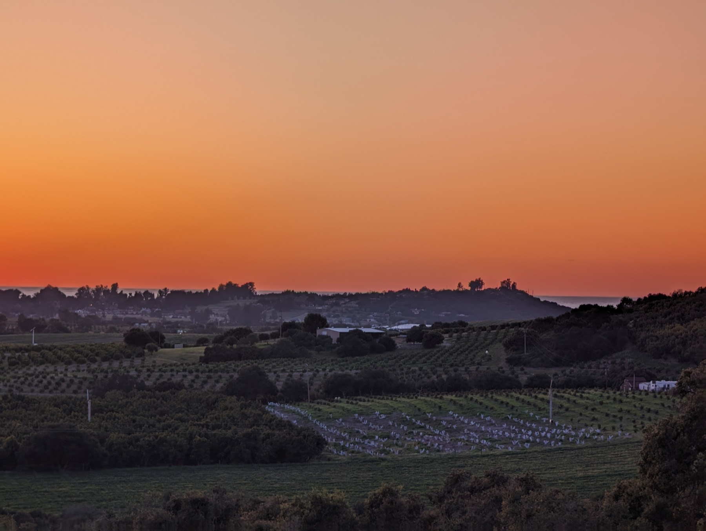

A small bot watches the aircraft that pass overhead and posts each one. It is the rebuilt AboveTustin, which did the same thing from a window in Tustin from 2016 to 2018.
More to come.

A house on the California Central Coast, and the sky above it.
A small bot watches the aircraft that pass overhead and posts each one. It is the rebuilt AboveTustin, which did the same thing from a window in Tustin from 2016 to 2018.
More to come.